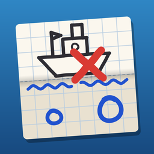

The schoolyard sea battle, drawn in pencil and folded in half. Hide a fleet of doodled ships, trade shots with a friend or the computer, sail a campaign against nine computer captains, and watch each ship’s drawing appear only when it goes down.
How it plays
-
Classic
One shot a turn on a 10×10 sheet of graph paper. Tap a square to aim, then press Fire. A miss is a pencil circle, a hit is red ink.
-
Salvo
Faster and swingier: you fire one shot for every ship you still have afloat, all at once, and the results come back together.
-
Doodle ships
Every ship is a funny little drawing with a name, like the Soggy Biscuit. Its drawing stays secret until it sinks, then it redraws itself and gets crossed out.
-
One folded page
Your fleet and your periscope are on the top half, the water you are shooting at is on the bottom half, within thumb reach. On a folding iPhone Duo, the crease sits right on the hinge.
Questions
How do we play together?
Tap “Two players”, then each of you hides a fleet in turn. Between turns a curtain covers the screen: pass the phone, and the next player holds the round button to look. Nobody ever sees the other fleet.
Can I play by myself?
Yes. Tap “The Voyage” for a campaign of nine computer captains across three seas, from Ensign Puddle on a little 6×6 sheet to the Leviathan in the deep, with up to three stars for each. Or tap “Play the computer” for a single battle on Easy, Medium or Hard. The computer only knows what you would know: it never peeks at your fleet.
What’s the difference between Classic and Salvo?
In Classic you take one shot a turn. In Salvo you take one shot for every ship you still have afloat, all at once, so you start with five and finish with one. Both use the same five ships.
Do I need an iPhone Duo?
No. Crease Fire works on any iPhone or iPad with iOS 18 or later. On iPhone Duo, the fold joins in:
- The paper’s crease sits on the hinge. Stand it up like a laptop and your fleet stands up on the top half while the water you are shooting at lies flat on the bottom half.
- Fold the phone shut to end your turn. The outside screen shows whose turn it is and the score, never anyone’s sheet.
- Close it mid-turn for a cease-fire. The match pauses and the outside screen shows how many ships each side has left.
- The top half becomes a periscope: a zoomed view around your finger, so your thumb never hides the square you are aiming at.
- Hinge sonar: arm it, bend the phone to sweep a scan line across the rows, hold still to lock and ping to learn how many enemy ship squares are in that row. You get two pings a match, and a ping costs your turn.
On any other device, each of these is a button, slider or tap, so nothing depends on a fold.
There’s no sound.
Sounds follow your ring/silent switch. You can also turn sounds and haptics on or off in the app’s settings.
How do I get it on my other devices?
Buy it once and download it on any iPhone or iPad signed in to the same Apple Account. In the App Store, tap your account picture, then Purchased.
Can I get a refund?
Apple handles all App Store purchases, so refunds go through reportaproblem.apple.com.
Does it need the internet?
No. There are no accounts, ads or in-app purchases, and everything works offline.
Still stuck?
Found a bug or have an idea? Email us with your device, its iOS version and what happened.
Email support gatefoldapps@gmail.com